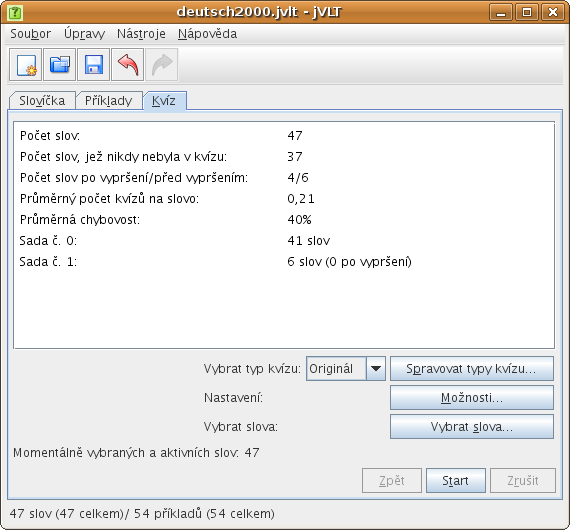
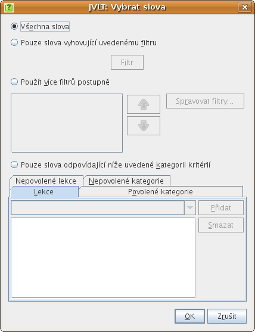
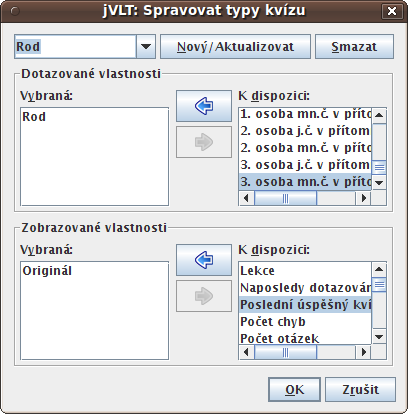
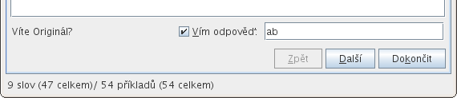
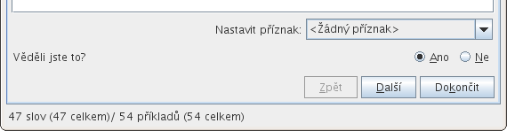
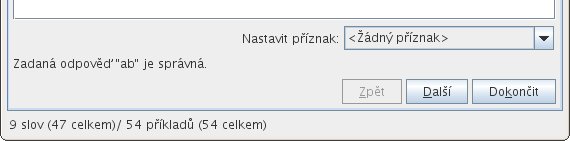
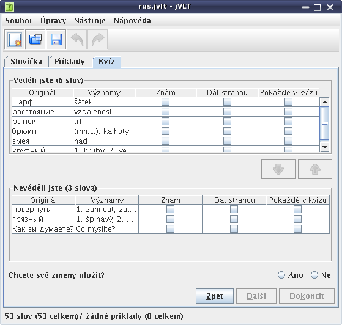

jVLT – nástroj pro učení se slovíček
Kvízy
- Sada č. 0: 0 dnů
- Sada č. 1: 1 den
- Sada č. 2: 3 dny
- Sada č. 3: 9 dnů
- Sada č. 4: 27 dnů
- Sada č. 5: 81 dnů
- Sada č. 6: 283 dnů
- Sada č. 7: 849 dnů

Před kvízem
Před započetím kvízu můžete omezit slova, která v něm budou, na určité skupiny slov, a to smáčknutím tlačítka „Vybrat slova...“, čímž se otevře stejnojmenný dialog. V tomto dialogu se nabízejí čtyři metody pro výběr slov:- Všechna slova: V kvízu budou všechna slova.
- Pouze slova vyhovující uvedenému filtru: V kvízu budou pouze slova, která vyhovují určitému filtru. Je-li vybrána tato možnost, musí se zadat filtr, a to stisknutím tlačítka „Filtr“. Dialog, který se následně otevře, je popsán zde.
- Použít více filtrů postupně: Můžete také vybrat více filtrů, které budou použity postupně. Můžete například zadat, aby se v kvízu nejdříve objevila všechna slova, na která jste ještě nebyli přezkoušeni, a poté slova z určité lekce. Nové filtry můžete přidat kliknutím na tlačítko „Spravovat filtry...“.
- Pouze slova odpovídající níže uvedené kategorii kritérií: Chcete-li rychle vybrat kategorie, které by měly (neměly) být v kvízu, zvolte tuto možnost.

jVLT se v kvízu standardně ptá na pole „Originál“. V dialogu, který se zobrazí po stisku tlačítka „Spravovat typy kvízu“, můžete sestavit další typy kvízu.

V tomto dialogu vybíráte pole, na které budete dotazováni, a pole, která se v kvízové otázce zobrazí. Nově vytvořený typ kvízu také musíte pojmenovat, a to tak, že do textového pole nahoře v dialogu zadáte název a následně stisknete tlačítko „Nový/Aktualizovat“. Lze také změnit existující typy kvízu, a to tak, že je vyberete prostřednictvím rozbalovací nabídky nahoře v dialogu a po dokončení změn stisknete tlačítko „Nový/Aktualizovat“.
Po přidání nového typu kvízu a zavření dialogu stisknutím tlačítka „OK“, můžete tento nový typ kvízu vybrat prostřednictvím rozbalovací nabídky „Vybrat typ kvízu“.
Během kvízu
V závislosti na tom, jak jste si nakonfigurovali nastavení kvízu, se může kvíz dělat dvěma odlišnými způsoby. První možnost je, že řešení zadáváte, jak můžete vidět na níže uvedené ilustraci.
Poté, co jste stiskli tlačítko „Další“, se zobrazí řešení a zpráva, ve které se říká, zda byla vaše odpověď správná.

Druhá možnost je, že nebudete řešení zadávat (místo toho jej můžete napsat na papír), a jVLT se vás po stisku tlačítka „Další“ zeptá, zda jste věděli správnou odpověď.

Kvíz můžete kdykoli ukončit, a to stisknutím tlačítka „Dokončit“. V dalším oddíle je popsáno, co se potom stane.
Po kvízu
Pokud jste se rozhodli skončit kvíz, jVLT se zeptá, zda si chcete zopakovat slova, která jste nevěděli. Následně zobrazí dva seznamy, jeden se slovy, která jste věděli, a druhý se slovy, která jste nevěděli. Jestliže jste slova, která jste věděli, omylem označili za neuhodnutá a naopak, můžete své chyby teď napravit tím, že příslušná slova vyberete a stisknete tlačítko se šipkou. Nakonec se můžete rozhodnout, zda se výsledky tohoto kvízu mají uložit, aby byly k dispozici pro budoucí kvízy.